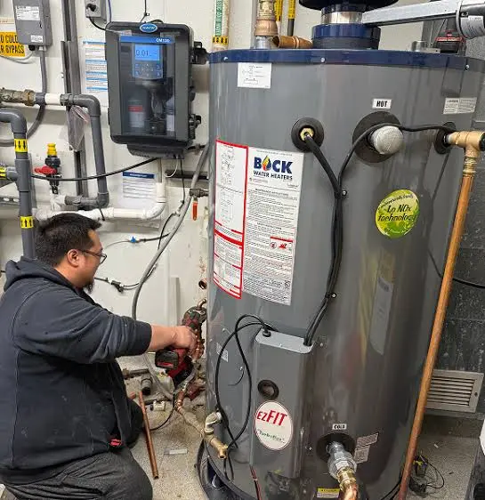

Commercial Water Heater Repair in Nampa

Commercial water heaters face heavier demand cycles than residential units and fail in ways that impact business operations. Our technicians are experienced with large-capacity storage systems, commercial tankless units, and booster heater configurations common in Nampa's restaurant and hospitality sectors.
Commercial Water Heater Types We Service
- Large-Capacity Storage Units (40–100+ gallon) — Gas and electric commercial storage heaters for restaurants, hotels, apartments, and office buildings.
- Commercial Tankless Systems — High-output gas tankless units for applications requiring continuous hot water delivery.
- Booster Heaters — Inline booster units that raise water temperature to 140–180°F for restaurant dishwasher compliance. These require specialized service.
- Point-of-Use Commercial Units — Small electric units at individual sinks in medical offices, salons, and light commercial settings.
- Multi-Unit Configurations — Manifolded tankless systems or stacked storage units for high-demand commercial properties.
Common Commercial Water Heater Failures
- Heating element failure in electric commercial units
- Gas valve, burner, or pilot assembly failure
- Thermostat and high-limit control failures
- Sediment accumulation (especially critical with Nampa hard water)
- Anode rod depletion leading to tank corrosion
- Pressure relief valve failure or pressure issues
- Booster heater thermostat failure (affecting dishwasher NSF compliance)
- Commercial tankless scale buildup and error codes
- Degraded recovery rate — a unit taking noticeably longer to reheat a full tank after peak-hour demand often signals a failing element, burner, or heavy sediment insulating the heat source
Priority Response for Food Service
Restaurants operating under Canyon County Health Department regulations require water temperatures that meet NSF/ANSI standards for commercial dishwashing. A failed booster heater or commercial water heater can trigger a health code violation. We prioritize food service calls for same-day response throughout Nampa.
Commercial Water Heater Repair FAQs
We repair commercial storage tank water heaters (40–100+ gallon), commercial tankless systems, point-of-use units, and booster heaters used in restaurant dishwasher applications. We service gas and electric commercial units from Rheem, A.O. Smith, Bradford White, American Standard, Noritz, Navien, and Rinnai.
We prioritize commercial calls, particularly for food service operations where hot water is required for health code compliance. We target same-day response for commercial emergencies in the Nampa area.
Commercial water heaters experience higher demand cycles, which accelerates wear on heating elements, thermostats, and anode rods. Nampa's hard water compounds this through sediment accumulation. Commercial units that lack a quarterly sediment flush schedule fail significantly earlier than properly maintained units.
Commercial repairs typically cost more due to larger components, higher-capacity parts, and sometimes more complex multi-unit configurations. Expect $200–$600 for most common repairs on standard commercial units, with larger systems or complete control board replacements running higher.